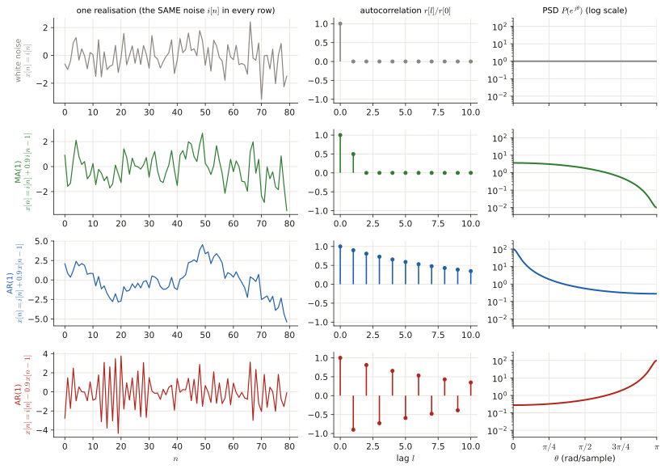
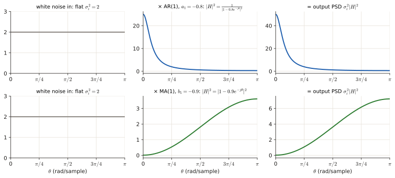
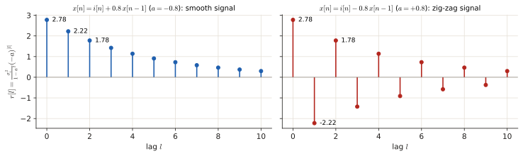
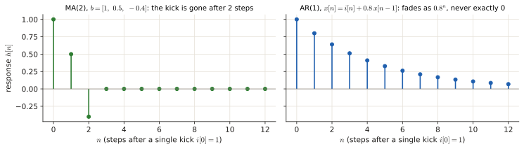

3.3 Autocorrelation and PSD of AR, MA and ARMA models#
Often the exam gives a difference equation (or a filter $H(z)$) driven by white noise and asks: which model is it, what is its PSD, what is its autocorrelation? This page is the "forward" direction: model → $r[l]$ and $P(e^{j\theta})$. The next page ([3.4](p3-chain.md)) goes backwards: $r[l]$ → model. Everything is built from one idea: a random signal can be made by feeding pure randomness into a simple recipe.
Before this page
- \(x[n]\) as a list of numbers, and why \(e^{-j\theta}\) appears in spectra (0.1, 0.3, 0.5)
- Expectation, variance, independence (0.6)
- Autocorrelation \(r[l]\) and the PSD as its FTD (0.6)
- The identity \(\lvert1+ce^{-j\theta}\rvert^2=1+c^2+2c\cos\theta\) (Toolbox)
If you read only one thing: white noise is "pure randomness with no memory"; an MA/AR/ARMA model is a recipe that gives it memory, and the memory is exactly what \(r[l]\) and the PSD measure.
1 · The idea: giving randomness a memory#
1.1 White noise, the raw material#
White noise \(i[n]\) (the innovation: the fresh surprise at each step) is a list of random numbers where every one is independent of all the others, has mean 0 and variance \(\sigma_i^2\). Because the samples are independent:
Its PSD is \(\sum_l r_i[l]e^{-jl\theta}=\sigma_i^2\): a flat line, all frequencies equally strong (hence "white", like white light).
1.2 Three recipes that add memory#
| Model | Recipe in words | Difference equation | \(H(z)\) |
|---|---|---|---|
| MA(\(q\)) (moving average) | today = fresh noise + a weighted mix of the last \(q\) noises | \(x[n]=i[n]+b_1i[n-1]+\dots+b_qi[n-q]\) | \(B(z)=1+\sum_{k=1}^q b_kz^{-k}\) |
| AR(\(p\)) (auto-regressive) | today = fresh noise + a weighted mix of the last \(p\) values of the signal itself | \(x[n]=i[n]-a_1x[n-1]-\dots-a_px[n-p]\) | \(\dfrac1{A(z)}=\dfrac1{1+\sum_{k=1}^p a_kz^{-k}}\) |
| ARMA(\(p,q\)) | both | \(x[n]=i[n]+\sum b_ki[n-k]-\sum a_kx[n-k]\) | \(\dfrac{B(z)}{A(z)}\) |
(Here \(z^{-1}\) just means "delay by one sample": \(z^{-k}\) in \(H(z)\) ↔ \([n-k]\) in the equation. On the unit circle \(z=e^{j\theta}\), so \(H(e^{j\theta})\) is the filter's effect at frequency \(\theta\).)
The sign convention
The \(a_k\) are defined with a minus in the difference equation. So \(x[n]=i[n]+\frac34x[n-1]\) means \(a_1=-\frac34\) and \(A(z)=1-\frac34z^{-1}\). The \(b_k\) come with a plus. Get this wrong and every later number is wrong.

How to tell which model it is. Look at what is on the right-hand side: past inputs \(i[n-k]\) → MA part (these give the zeros). Past outputs \(x[n-k]\) → AR part (these give the poles). Both → ARMA. The orders are the largest delay of each kind.
Three one-liners
- \(x[n]=i[n]+0.5\,i[n-1]\) → MA(1), \(b_1=0.5\).
- \(x[n]=i[n]+0.8\,x[n-1]\) → AR(1), \(a_1=-0.8\) (move the term: \(x[n]-0.8x[n-1]=i[n]\) ↔ \(1+a_1z^{-1}=1-0.8z^{-1}\)).
- \(x[n]=i[n]-i[n-1]+0.75\,x[n-1]\) → ARMA(1,1), \(b_1=-1\), \(a_1=-0.75\).
2 · The PSD of a model, without any autocorrelation#
Plain words. A filter \(H\) changes the size of every frequency component by \(|H(e^{j\theta})|\) (that is what a filter is). Power is size squared, so it changes the power at frequency \(\theta\) by \(|H(e^{j\theta})|^2\). The input is white noise with a flat PSD \(\sigma_i^2\). So the output PSD is
with \(B=B(e^{j\theta})\), \(A=A(e^{j\theta})\).


Expanding the squares. For one coefficient \(c\), using \(\lvert u\rvert^2=u\bar u\) and \(\cos\theta=\frac{e^{j\theta}+e^{-j\theta}}2\):
Check against the autocorrelation (MA(1), \(b=0.5\), \(\sigma_i^2=1\))
By the formula: \(P=1+0.25+2(0.5)\cos\theta=1.25+\cos\theta\). By section 3 below, \(r[0]=1+0.25=1.25\) and \(r[\pm1]=0.5\), so \(P=r[0]+2r[1]\cos\theta=1.25+\cos\theta\). Same.
Recipe: model → PSD
- Read off \(b_k\) and \(a_k\) (watch the sign!) and \(\sigma_i^2\).
- Write \(P=\sigma_i^2\frac{\lvert1+b_1e^{-j\theta}\rvert^2}{\lvert1+a_1e^{-j\theta}\rvert^2}\) and expand each factor with \(1+c^2+2c\cos\theta\).
- Clean up the fractions (multiply numerator and denominator by the same number).
3 · The autocorrelation, derived#
The method is always the same: multiply the difference equation by \(x[n-l]\) and take the expectation. Two facts do all the work:
- Today's fresh noise is unrelated to the past signal: \(\mathbb E\{i[n]\,x[n-l]\}=0\) for \(l\ge1\). (The noise at time \(n\) is independent of everything that happened before \(n\), and \(x[n-l]\) only contains older noise.)
- Today's noise shows up in today's signal with weight 1: \(\mathbb E\{i[n]\,x[n]\}=\sigma_i^2\). More generally \(\mathbb E\{i[n-k]\,x[n]\}=\sigma_i^2\,h[k]\), where \(h[k]\) is the impulse response: the filter's output at time \(k\) when fed a single 1 at time 0 (\(h[0]=1\), and \(h[1]=b_1-a_1\) for ARMA(1,1)).
3.1 MA(\(q\)): slide the coefficient list over itself#
Write \(b_0=1\) so that \(x[n]=\sum_{k=0}^qb_ki[n-k]\). Then
By section 1.1 the expectation is \(\sigma_i^2\) when the two time indices agree, i.e. \(k=l+m\), and 0 otherwise. So only the pairs \((k,m)=(m+l,m)\) survive:
In words: line up the coefficient list with a copy of itself shifted by \(l\), multiply the overlapping entries, add, times \(\sigma_i^2\). Past lag \(q\) the lists no longer overlap, so \(r[l]=0\): the memory of an MA(\(q\)) is exactly \(q\) steps long. (So the autocorrelation has non-zero values for \(|l|\le q\): that is \(2q+1\) values, not \(q\).)
MA(2) with \(b=[1,\,0.5,\,-0.4]\), \(\sigma_i^2=1\)
- \(r[0]=1^2+0.5^2+(-0.4)^2=1+0.25+0.16=1.41\)
- \(r[1]=1\cdot0.5+0.5\cdot(-0.4)=0.5-0.2=0.3\)
- \(r[2]=1\cdot(-0.4)=-0.4\)
- \(r[l]=0\) for \(|l|\ge3\).
3.2 AR(1): a geometric tail#
\(x[n]=i[n]-a\,x[n-1]\). Multiply by \(x[n-l]\) and take expectations:
- For \(l\ge1\): \(r[l]=-a\,r[l-1]\) → each lag is \(-a\) times the previous one: \(r[l]=(-a)^{l}r[0]\).
- For \(l=0\): \(r[0]=\sigma_i^2-a\,r[1]=\sigma_i^2-a(-a\,r[0])=\sigma_i^2+a^2r[0]\), so \(r[0]=\dfrac{\sigma_i^2}{1-a^2}\).
An AR model has infinite memory: \(r[l]\) never reaches exactly 0, it only decays.
Example: \(a=-0.8\), \(\sigma_i^2=1\): \(r[0]=\frac1{1-0.64}=2.78\), \(r[1]=2.78\cdot0.8=2.22\), \(r[2]=1.78\), … (slow decay; the signal is smooth).


3.3 ARMA(1,1): two equations, then a geometric tail#
\(x[n]=i[n]+b\,i[n-1]-a\,x[n-1]\) with \(h[1]=b-a\) (check: set \(i=[1,0,0,\dots]\); \(x[0]=1\), \(x[1]=b-a\cdot1\)). Multiplying by \(x[n-l]\) and using the two facts:
- \(l=0\): \(r[0]=\mathbb E\{i[n]x[n]\}+b\,\mathbb E\{i[n-1]x[n]\}-a\,r[1]=\sigma_i^2+b\,\sigma_i^2h[1]-a\,r[1]\) (fact 2 twice).
- \(l=1\): \(r[1]=\underbrace{\mathbb E\{i[n]x[n-1]\}}_{0}+b\,\underbrace{\mathbb E\{i[n-1]x[n-1]\}}_{\sigma_i^2}-a\,r[0]\).
- \(l\ge2\): both noise terms vanish (fact 1), only the AR part acts.
So: solve the first two as a 2×2 linear system for \(r[0],r[1]\), then each further lag is \(-a\) times the previous one.
Exam questions#
April 2024 exam · 3b, 3c#
Final exam Q3, April 2024 · 3b (0.1 p), 3c (0.5 p)
A random signal is described by the following difference equation:
3b Which kind of signal model does this signal represent?
3c Calculate the autocorrelation function of \(x[n]\)
Solution
What is being asked? 3b: name the model. 3c: give \(r[l]\) for every lag.
Step 1 — 3b: read the equation. Only past inputs \(i[n-k]\) appear, no past \(x\); the largest delay is 3 → MA(3), with coefficient list \(b=[b_0,b_1,b_2,b_3]=[1,-\frac12,\frac14,-\frac12]\).
Step 2 — 3c: variance. No \(\sigma_i^2\) is given, so take \(\sigma_i^2=1\) (otherwise multiply every result by \(\sigma_i^2\)).
Step 3 — slide the list over itself (formula of 3.1; \(r[l]=\sum_m b_{m+l}b_m\)):
| lag | products | \(r[l]\) |
|---|---|---|
| 0 | \(1^2+(-\frac12)^2+(\frac14)^2+(-\frac12)^2=1+\frac14+\frac1{16}+\frac14\) | \(\frac{25}{16}\) |
| ±1 | \(b_1b_0+b_2b_1+b_3b_2=-\frac12+(\frac14)(-\frac12)+(-\frac12)(\frac14)=-\frac12-\frac18-\frac18\) | \(-\frac34\) |
| ±2 | \(b_2b_0+b_3b_1=\frac14+(-\frac12)(-\frac12)=\frac14+\frac14\) | \(\frac12\) |
| ±3 | \(b_3b_0=-\frac12\) | \(-\frac12\) |
| \(\lvert l\rvert\ge4\) | the lists no longer overlap | 0 |
Answer
3b: MA(3). 3c: \(r[0]=\frac{25}{16}\), \(r[\pm1]=-\frac34\), \(r[\pm2]=\frac12\), \(r[\pm3]=-\frac12\), 0 otherwise (\(\sigma_i^2=1\)).
These lags are used again in 3d–3f.
November 2022 exam · 3c, 3d, 3e#
Final exam Q1, 7 November 2022 · 3c (0.15 p), 3d (0.35 p), 3e (0.5 p)
The random signal \(x[k]\) is described by the following difference equation:
with \(i[k]\) the innovation signal (zero mean and \(\sigma_i^2 = 7/8\)).
3c Which kind of process does \(x[k]\) represents?
3d Calculate the power spectral density \(P_x(e^{j\theta})\) of \(x[k]\).
3e Calculate the autocorrelation \(r[\tau]\) of \(x[k]\).
Solution
What is being asked? 3c: the model name. 3d: the PSD as a formula in \(\theta\). 3e: \(r[\tau]\) for all lags \(\tau\) (\(\tau\) is the lag, same as \(l\)).
Symbols in this question
| Symbol | Meaning |
|---|---|
| \(b_1=-1\) | coefficient of \(i[k-1]\) (a plus-convention coefficient: \(x=i+b_1i[k-1]\)) |
| \(a_1=-\frac34\) | the equation has \(+\frac34x[k-1]\), and the convention is \(-a_1x[k-1]\), so \(a_1=-\frac34\) |
| \(\sigma_i^2=\frac78\) | variance of the white noise |
Step 1 — 3c. One past input (\(i[k-1]\)) and one past output (\(x[k-1]\)) → ARMA(1,1).
Step 2 — 3d: PSD formula. \(P_x=\sigma_i^2\frac{\lvert B\rvert^2}{\lvert A\rvert^2}\) (section 2):
Step 3 — expand with \(1+c^2+2c\cos\theta\). Numerator: \(c=-1\) → \(1+1-2\cos\theta=2-2\cos\theta\). Denominator: \(c=-\frac34\) → \(1+\frac9{16}-\frac32\cos\theta=\frac{25}{16}-\frac32\cos\theta\).
Step 4 — clean up. Multiply numerator and denominator by 16: numerator \(32-32\cos\theta\), denominator \(25-24\cos\theta\). Then \(\frac78\cdot32=28\):
Sanity check: \(P_x(0)=0\) because \(1-\cos0=0\). Reason: the zero sits at \(z=1\) on the unit circle (\(B(1)=1-1=0\)), so there is no power at frequency 0.
Step 5 — 3e: the 2×2 system (ARMA(1,1) of 3.3, \(b=-1\), \(a=-\frac34\)). First \(h[1]=b-a=-1+\frac34=-\frac14\). Then
Step 6 — solve. Substitute the second equation into the first:
Then \(r[1]=-\frac78+\frac34=-\frac18\). After lag 1 only the AR part acts: \(r[l]=\frac34r[l-1]\), so \(r[2]=-\frac3{32}\), and in general \(r[l]=-\frac18(\frac34)^{l-1}\).
(A 400 000-sample simulation gives \(\hat r[0]=0.997\), \(\hat r[1]=-0.126\), \(\hat r[2]=-0.095\) vs. \(-3/32=-0.094\). ✓)
Answer
3c: ARMA(1,1). 3d: \(P_x=\dfrac{28(1-\cos\theta)}{25-24\cos\theta}\). 3e: \(r[0]=1\), \(r[l]=-\frac18\left(\frac34\right)^{|l|-1}\) for \(|l|\ge1\).
The rest of this exercise (3f, 3g) is on the next page.
Practice exam 2021 · 3a#
Practice exam, 28 October 2021 · 3a · 0.75 p
Calculate the autocorrelation function of the random signal \(x[k]\) that is generated by filtering innovation \(i[k]\) (white noise sequence with zero mean and variance \(\sigma_i^2 = 1\)) with the filter
Solution
What is being asked? The filter is given as \(H(z)\), not as an equation. Turn it into a difference equation, recognise the model, and compute \(r[l]\).
Step 1 — filter → equation. \(H(z)=\frac{X(z)}{I(z)}\) means \(X(z)\big(1-\frac12z^{-1}\big)=I(z)\big(1-\frac23z^{-1}\big)\). Read \(z^{-k}\) as "delay by \(k\)": \(x[k]-\frac12x[k-1]=i[k]-\frac23i[k-1]\), i.e.
Step 2 — read the coefficients. ARMA(1,1) with \(b=-\frac23\) and \(a=-\frac12\) (the \(+\frac12x[k-1]\) means \(a=-\frac12\)). Impulse response: \(h[1]=b-a=-\frac23+\frac12=-\frac16\) (the same number comes out of long division, \(\frac{1-\frac23z^{-1}}{1-\frac12z^{-1}}=1-\frac16z^{-1}-\dots\)).
Step 3 — the 2×2 system (3.3, \(\sigma_i^2=1\)):
Step 4 — solve. \(r[0]=\frac{10}9+\frac12\big(-\frac23+\frac12r[0]\big)=\frac{10}9-\frac13+\frac14r[0]\) → \(\frac34r[0]=\frac{10}9-\frac39=\frac79\) → \(r[0]=\frac{28}{27}\). Then \(r[1]=-\frac23+\frac{14}{27}=-\frac{18}{27}+\frac{14}{27}=-\frac4{27}\). For \(l\ge2\): \(r[l]=\frac12r[l-1]\).
PSD (asked in the review slides): \(\lvert1-\frac23e^{-j\theta}\rvert^2=1+\frac49-\frac43\cos\theta=\frac{13}9-\frac43\cos\theta\) and \(\lvert1-\frac12e^{-j\theta}\rvert^2=\frac54-\cos\theta\), so \(P(e^{j\theta})=\dfrac{\frac{13}9-\frac43\cos\theta}{\frac54-\cos\theta}\).
Answer
\(r[0]=\frac{28}{27}\), \(r[l]=-\frac{4}{27}\left(\frac12\right)^{|l|-1}\) for \(|l|\ge1\)
January 2022 resit · 3b#
Resit, 24 January 2022 · 3b · 1 p
A real MA(2) process has difference equation given by \(x[n] = i[n] + ai[n - 1] + bi[n - 2]\), with \(i[n]\) white noise process (zero mean and unit variance). The parameters \(a\) and \(b\) are real. The following lags of the autocorrelation are known
Based on the given lags of the autocorrelation function, calculate the parameters \(a\) and \(b\).
Solution
What is being asked? This is the backwards direction: you know some \(r[l]\) of an MA(2), find its coefficients.
Symbols in this question. Here \(a,b\) are the MA coefficients \(b_1,b_2\) (the question reuses the letters — not the AR convention). Coefficient list \([1,a,b]\), \(\sigma_i^2=1\).
Step 1 — write the lags with the sliding formula of 3.1:
- \(r[2]=1\cdot b=b\) (only the first and last entries overlap),
- \(r[1]=1\cdot a+a\cdot b=a(1+b)\).
Step 2 — start from the largest lag, because it has a single product and gives one coefficient directly: \(b=r[2]=\frac14\).
Step 3 — use it in the next lag: \(a(1+b)=-\frac{15}{16}\) → \(a=\dfrac{-15/16}{5/4}=-\dfrac{15}{16}\cdot\dfrac45=-\dfrac34\).
Answer
\(a=-\frac34\), \(b=\frac14\)
January 2019 retake · 1d#
Written exam, 21 January 2019 · Exercise 1(d) · 0.5 p (1 or 2 answers correct)
In the context of linear random signal models, which ones of the following statements are true?
- A. The autocorrelation function of a moving-average (MA) model with \(Q\) zeros is a finite sequence of length \(Q\).
- B. The autocorrelation matrix of an ARMA model is diagonal.
- C. Assuming a moving-average model (MA), parametric spectral estimation by the Yule-walker method requires resolution of non-linear equations.
- D. Linear signal models can be used for data compression.
Solution
What is being asked? Mark the true statements (one or two).
| Verdict | Reason | |
|---|---|---|
| A | false | an MA(\(Q\)) has \(r[l]\ne0\) for \(\lvert l\rvert\le Q\): that is length \(2Q+1\), not \(Q\) (3.1) |
| B | false | a diagonal autocorrelation matrix means \(r[l]=0\) for \(l\ne0\): only white noise (no memory) has that |
| C | true | the MA equations contain products \(b_kb_{k-l}\), so solving for \(b\) is non-linear (MA(1): a quadratic; see 3.4) |
| D | true | a few model parameters describe a long signal |
Answer
C and D